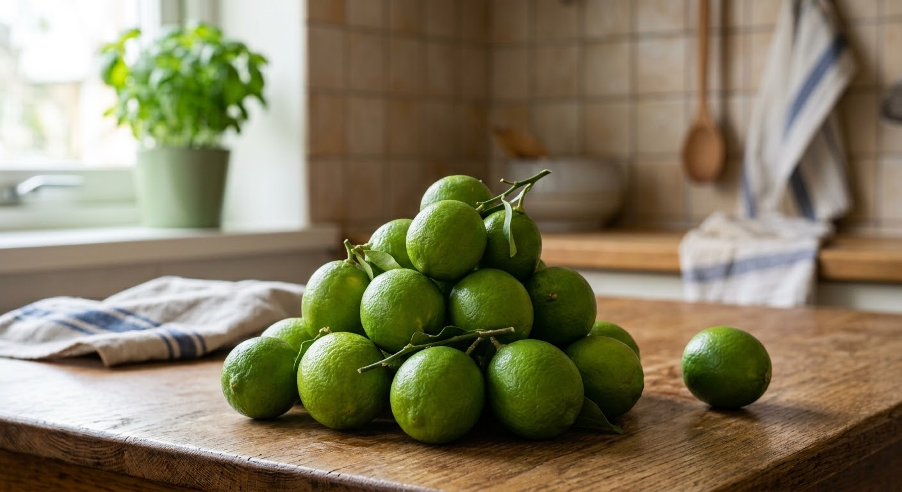
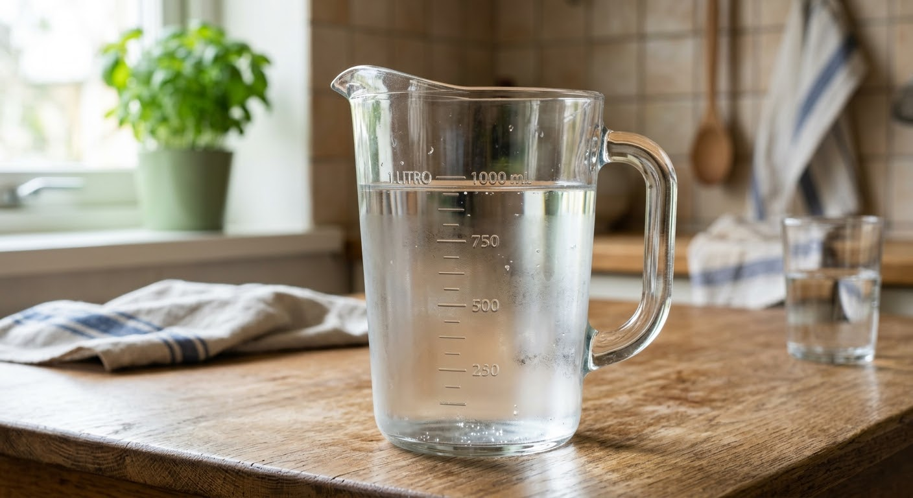
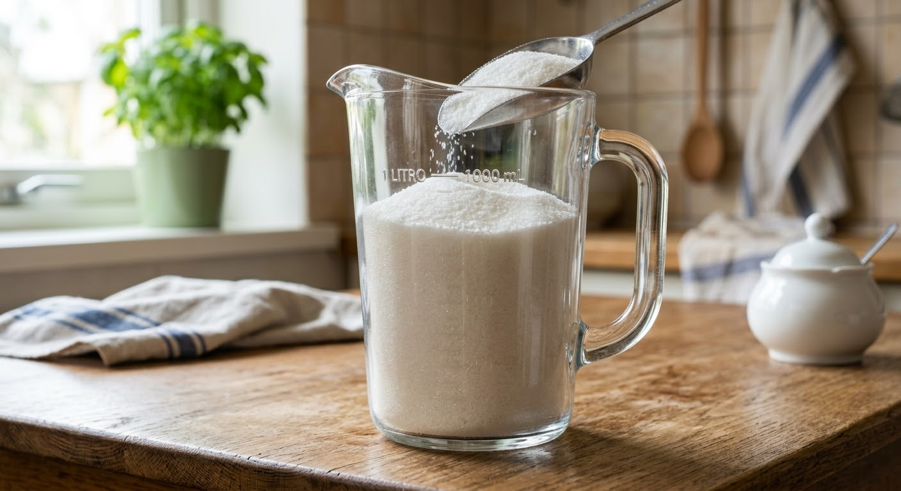
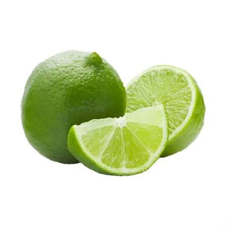

Recetario
Limonada natural
Ingredientes
5 limones

1 litro de agua

3 cucharadas de azúcar

Preparación
1. Exprime los cinco limones.
2. Vacía el jugo en una jarra.
3. Agrega un litro de agua.
4. Añade las tres cucharadas de azúcar.
5. Mezcla todos los ingredientes.
Imagen de referencia

Condiciones
• Al pasar el mouse por cada ingrediente aparece su imagen.
• El botón cambia el fondo, las letras y los títulos.
• La página se adapta a celulares.
• El segundo botón cambia entre transparente y opaco.